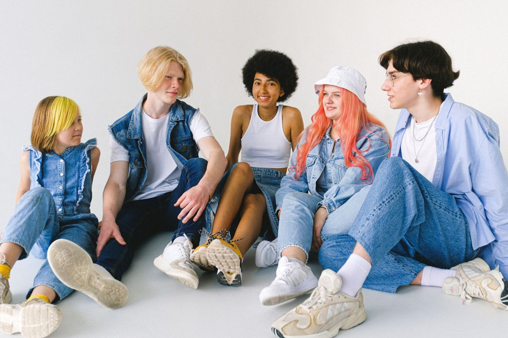

Menteem foco
Conversando sobre saúde mental na adolescência com estudantes da escola pública

Roteiro do projeto
Do dado à ação
Análise situacional
Onde a ação acontece, por que ali e para quem.
O problema
O que os dados oficiais mostram e a base teórica.
A solução
O que será feito, como, por quem e quando.
Acompanhamento
Indicadores, ODS e alcance esperado.
Etapa 1 · Análise situacional
Onde a ação acontece
Roda de conversa no Google Meet e cartilha digital para estudantes do Ensino Médio de uma escola pública estadual da região de Santo Amaro, Zona Sul de São Paulo, território onde a UNISA está inserida.
dos brasileiros de 9 a 17 anos usam a internet. O formato online alcança o público onde ele já está, sem depender de deslocamento (CETIC.br, 2025).
Etapa 1 · Justificativa e público-alvo
Por que ali e para quem
dos estudantes da rede estadual paulista relataram sintomas de depressão ou ansiedade após a pandemia.
A Lei 13.935/2019 prevê psicólogos na educação básica, mas a implantação ainda é limitada. A extensão aproxima a Psicologia da escola pública do entorno da universidade.
Instituto Ayrton Senna / SEDUC-SP, 2022
anos, da 1ª à 3ª série do Ensino Médio da rede pública estadual
estudantes na roda de conversa online (meta)
pessoas alcançadas pela cartilha digital: estudantes, famílias e educadores
Etapa 1 · Objetivos da ação
O que queremos alcançar
Promover a saúde mental e o autocuidado de adolescentes de escola pública por meio de uma ação psicoeducativa online, ampliando o acesso à informação qualificada e à rede de apoio.
Informar sobre saúde mental, ansiedade e sinais de alerta, reduzindo o estigma
Refletir sobre o uso saudável das redes sociais e a importância do sono
Ensinar estratégias de autocuidado e regulação emocional: respiração, rotina e vínculos
Divulgar a rede de apoio: CVV 188, UBS, CAPS Infantojuvenil, SAMU 192 e escola
Produzir e distribuir a cartilha digital “Mente em Foco”
Avaliar o conhecimento dos participantes antes e depois da ação
Etapa 2 · Apresentação do problema
De cada 100 escolares de 13 a 17 anos
sentem-se tristes na maior parte do tempo ou sempre
sentem-se muito preocupados com as coisas do dia a dia
sentiram que a vida não valia a pena nos últimos 30 dias
Etapa 2 · O problema
O sofrimento tem rosto e gênero
Sentiram que a vida não valia a pena (PeNSE 2019)
principal causa de morte entre 15 e 19 anos é o suicídio (Ministério da Saúde, 2024)
adolescentes de 10 a 19 anos vive um transtorno mental (OMS/OPAS)
Na escola faltam espaços de escuta e informação sobre o tema.
Etapa 2 · Resultados esperados
O que deve mudar
Conhecimento
de acertos no questionário após a ação
Satisfação
média dos participantes, em escala de 1 a 5
Autocuidado e rede
estratégias de autocuidado e serviços de apoio que cada participante sabe citar
Menos estigma e mais disposição para pedir ajuda
Cartilha disponível de forma permanente para a escola
Vínculo fortalecido entre universidade e escola
Etapa 2 · Fundamentação teórica
A base teórica
Adolescência e identidade
Fase da crise “identidade versus confusão de papéis”, em que o jovem busca pertencimento e sentido. Intervir cedo, na escola, está entre as estratégias mais efetivas (Kieling et al., 2011).
Sofrimento e vida digital
93% dos jovens de 9 a 17 anos estão online e expostos a comparação social, cyberbullying e noites mal dormidas, fatores que agravam ansiedade e tristeza.
Promoção da saúde
A Carta de Ottawa valoriza autonomia e ambientes saudáveis. O Programa Saúde na Escola e a Lei 13.935/2019 levam esse cuidado para a educação básica.
Roda de conversa
Método dialógico inspirado em Freire (1996): o conhecimento é construído com o grupo. A prática segue as Referências Técnicas do CFP (2019).
adolescentes de 10 a 19 anos vive um transtorno mental, e metade dos casos começa até os 14 anos.
OMS / OPASEtapa 3 · Solução · O quê
Três frentes de ação
18 horas no total. Termo de autorização (Anexo 1) assinado pela escola e autorização dos responsáveis pelos estudantes menores de idade (ECA).
Etapa 3 · Cronograma
Dez dias, cinco passos
CARGA HORÁRIA TOTAL
Planejamento, pesquisa em fontes oficiais, contato com a escola e Termo de autorização
4 hCriação da cartilha digital (6 cards + PDF) e do roteiro da roda de conversa
6 hDivulgação, autorizações dos responsáveis e questionário pré-ação
2 hRoda de conversa online no Google Meet e envio da cartilha
2 hQuestionário pós-ação, análise dos resultados e relatório final
4 hEtapa 3 · Como · Metodologia e materiais
Como a ação funciona
- 01Levantamento de dados públicos: IBGE, OMS/OPAS, Ministério da Saúde e CETIC.br
- 02Cartilha baseada em evidências
- 03Roda de conversa online com perguntas disparadoras (Afonso; Abade, 2008)
- 04Questionário pré e pós com 5 questões e escala de satisfação de 1 a 5
- 05Análise descritiva dos resultados e relatório
Computador ou celular, Google Meet e Forms, Canva gratuito, slides, autorizações e lista da rede de apoio
Cuidado ético
A ação é educativa, não terapêutica. Situações de risco são encaminhadas à escola e à rede: CVV 188, UBS, CAPS IJ e SAMU 192.
Etapa 3 · Quem · Parceiros · Quando
Quem faz, com quem e quando
PESSOAS E FUNÇÕES
Extensionista: planejamento, pesquisa, cartilha, mediação e análise
Orientação e supervisão técnica e ética
Mobiliza os alunos e acompanha a roda
Participam e multiplicam a cartilha
PARCEIROS
Supervisão acadêmica
SEDUC-SP · mobilização do público
UBS e CAPS Infantojuvenil como referência
RODA DE CONVERSA
Quinta · 14h às 16h
Google Meet
Execução de 26/11 a 05/12
Etapa 3 · Material produzido
A cartilha Mente em Foco
O que é saúde mental?
- Bem-estar para lidar com o estresse, aprender e se relacionar
- Falar de sentimentos é cuidado
Sinais de alerta
- Preocupação que não passa
- Insônia, irritação, isolamento
Redes com equilíbrio
- Perfis mostram recortes, não a vida real
- Telas desligadas 1h antes de dormir
Autocuidado
- Sono, alimentação e movimento
- Respiração 4-4-6: inspire 4s, segure 4s, solte 6s
Ajudar um amigo
- Escute sem julgar
- Risco à vida não é segredo: chame um adulto
Onde pedir ajuda
- CVV 188 · gratuito, 24h
- UBS, CAPS IJ, SAMU 192 e a escola
Etapa 4 · Acompanhamento e evolução
Indicadores de desempenho
PARTICIPANTES
estudantes na roda, mais a extensionista, o orientador e 1 educador(a)
Medimos: presentes, taxa de resposta aos questionários e satisfação média (meta ≥ 4 de 5).
ABRANGÊNCIA ESTIMADA
Média de moradores: IBGE, Censo 2022. A cartilha fica disponível para as próximas turmas.
ODS TRABALHADOS
Meta 3.4: promover a saúde mental e o bem-estar.
Etapa 4 · Encerramento do projeto
Considerações finais
A extensão universitária pode aproximar a Psicologia da escola pública mesmo sem presença física. Os dados oficiais mostram um sofrimento frequente, que atinge mais as meninas e encontra poucos espaços de escuta.
A roda online com cartilha digital é de baixo custo, replicável e próxima da linguagem dos jovens. Para a formação, exercita escuta, ética, comunicação científica e trabalho em rede.
Fontes consultadas
Referências
- AFONSO, M. L. M.; ABADE, F. L. Para reinventar as rodas: rodas de conversa em direitos humanos. Belo Horizonte: RECIMAM, 2008.
- BRASIL. Decreto nº 6.286, de 5 de dezembro de 2007. Institui o Programa Saúde na Escola – PSE. Brasília, 2007.
- BRASIL. Lei nº 13.935, de 11 de dezembro de 2019. Dispõe sobre a prestação de serviços de psicologia e de serviço social nas redes públicas de educação básica. Disponível em: planalto.gov.br. Acesso em: 23 nov. 2026.
- BRASIL. Ministério da Saúde. Panorama dos suicídios e lesões autoprovocadas no Brasil de 2010 a 2021. Boletim Epidemiológico, v. 55, n. 4, 2024.
- CETIC.BR. TIC Kids Online Brasil 2024: principais resultados. São Paulo: CGI.br, 2025. Disponível em: cetic.br. Acesso em: 23 nov. 2026.
- CONSELHO FEDERAL DE PSICOLOGIA. Referências técnicas para atuação de psicólogas(os) na educação básica. 2. ed. Brasília: CFP, 2019.
- ERIKSON, E. H. Identidade: juventude e crise. 2. ed. Rio de Janeiro: Zahar, 1976.
- FREIRE, P. Pedagogia da autonomia: saberes necessários à prática educativa. São Paulo: Paz e Terra, 1996.
- IBGE. Pesquisa Nacional de Saúde do Escolar: 2019. Rio de Janeiro: IBGE, 2021. Acesso em: 23 nov. 2026.
- INSTITUTO AYRTON SENNA. Saúde mental dos estudantes da rede estadual de São Paulo. São Paulo: IAS; SEDUC-SP, 2022.
- KIELING, C. et al. Child and adolescent mental health worldwide: evidence for action. The Lancet, v. 378, n. 9801, p. 1515-1525, 2011.
- ORGANIZAÇÃO MUNDIAL DA SAÚDE. Carta de Ottawa para a promoção da saúde. Ottawa: OMS, 1986.
- ORGANIZAÇÃO PAN-AMERICANA DA SAÚDE. Saúde mental dos adolescentes. Disponível em: paho.org. Acesso em: 23 nov. 2026.
- ORGANIZAÇÃO DAS NAÇÕES UNIDAS. Transformando nosso mundo: a Agenda 2030 para o Desenvolvimento Sustentável. Nova York: ONU, 2015.